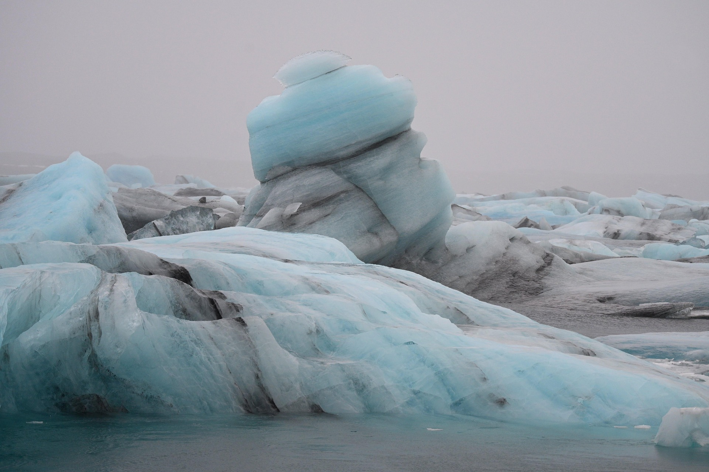

一份从冰河湖浮冰里提取出来的配色与元素系统。唯一一个色相、漫射无影的光、横贯的灰纹层。用于视频与演示文稿。
灰白的天压得很低，雾把地平线吃掉了，分不清哪是水哪是空气。前景一块巨大的浮冰横躺着，上面压着一小堆斜切的冰垛； 冰体里横贯着一道道灰黑色的条纹——那不是脏，是几百年前某一座火山喷发落下的灰，被后来的雪一层层盖住、压实，成了冰的一部分。 光是漫射的，没有方向，也没有影子；颜色只有一种，就是从冰芯里透出来的青。
这是整套四套里唯一没有暖色、也没有直射光的一套。前三套里有两套深底、一套浅底，这一套补上的正是「冷 + 浅」那一格。
整页只允许出现青这一个色相，明度从雾白到玄水拉开。面积上颜色只占四分之一，其余交给中性灰。一旦引入第二个色相（哪怕只是暖灰），这张图立刻变成「旧照片」而不是「冰川」。
漫射光下不存在硬边投影。光影一律用大半径、低浓度的柔扩散表达——半径 40–80px、浓度 8%–12%。这是跟「晨光牧场」那套强光比、硬投影最相反的一条。
上雾、中冰、下水的三段式是骨架。同时灰纹本身就是「层」的符号，它代表时间——所以它只出现在分隔、时间轴、进度这类功能位置上，不做纹理填充。
冰是被压出来的多面体，全是斜切的平面，没有一处圆润的转折。圆角统一 2px，允许 6°–14° 的斜切。
雾里没法用透视表达远近。前后关系统一由明度解决：越靠前越亮越实，越靠后越贴向雾白。不用虚化分层——这张照片景深极大，全画面都是清晰的。
冰在漂，但慢到几乎看不出在动。这是全套四套里最慢的一档：背景循环 40–60 秒，靠时间尺度本身表达「这些冰用了几百年才到这里」。
九色。五个中性灰撑面积，三个青是唯一的色相，白只用于极值。
#E9EBE8#CDD3D2#98A0A1#4E5658#26383B#A6D0D7#5E9AA8#3F6B77#F5F8F7做层次时优先在同一色相里改明度。以下每色 5 阶，从左到右由亮到暗。
| 色族 | 阶梯（从左至右） |
|---|---|
| 雾白 | #FBFCFB · #F1F3F1 · #E9EBE8 · #DDE1DE · #CED4D2 |
| 岩灰 | #C6CCCD · #AFB6B7 · #98A0A1 · #7C8485 · #616869 |
| 冰蓝 | #D8ECEF · #BFDEE3 · #A6D0D7 · #89BAC4 · #6EA5B1 |
| 冰芯 / 幽蓝 | #7FB2BD · #5E9AA8 · #4C8391 · #3F6B77 · #2F525C |
| 炭纹 / 玄水 | #6A7274 · #4E5658 · #3A4648 · #26383B · #182729 |
这套是浅底，所以逻辑跟深底那套正好反过来——越深越重要，最深的一档留给结论。
| 语义 | 用色 | 说明 |
|---|---|---|
| 结论 / 极值 | 玄水 | 最暗的一档，用来钉住最终的那个数 |
| 主序列 / 核心 | 冰芯 | 被讨论的那一组数据，浅底上唯一有色的主角 |
| 对照 / 次级 | 岩灰 | 同期、均值、参考线 |
| 深部 / 强调 | 幽蓝 | 需要单独指出的一段（也用于坐标轴、关键描边） |
| 面积 / 基座 | 冰蓝 | 堆叠面积的最底层、大块背景填充 |
| 缺失 / 未填 | 云灰 | 用比画布深一档的灰表示空缺，不用描边 |
底 #E9EBE8，文字 #26383B（对比 11.2:1）。这套的主场。注意它是带一点绿的冷白，换成暖白或纯白立刻丢掉冰川感。
底 #26383B，文字 #F5F8F7。用于金句、章节扉页、以及每页底部那条压边。占比不超过两成。
卡片底 #F4F6F4，比画布亮一档，靠明度差分层。描边 1px rgba(38,56,59,.12)，不用投影。
这张照片本身很亮很平，压字不需要压暗，反而要提亮：叠 30% 雾白蒙版，再整体抬一档亮度。文字用玄水，落在冰体的亮面或雾上。
| 规则 | 做法 |
|---|---|
| 只有一个色相 | 全页只允许青（170°–195°）。中性灰必须是不带色相的冷灰（R≈G≈B），不能用棕灰、米白、暖白。混进一丝暖就变成「旧的」而不是「冷的」。 |
| 冰蓝只做面，不做点 | #A6D0D7 与画布明度太近（对比仅 1.3:1），做小色块会直接化掉。它只能用于大块填充；需要被看清的标记一律用冰芯或更深。 |
| 冰蓝总量 ≤ 25% | 它是冰的体积，不是底纹。需要更多面积时加云灰，而不是把冰蓝铺开。 |
| 深色只在底部或整块 | 照片里深水只出现在画面下缘。玄水要么是整块底，要么是贴底的横带，不要零散点状撒在画面中间。 |
| 不用纯白，也不用纯黑 | 最亮 #F5F8F7，最暗 #182729。纯白让雾变硬，纯黑让冰变脏。 |
| 灰纹不与文字平行相邻 | 灰纹是暗色细线，紧贴正文下方会读成删除线。灰纹与文字之间至少留 12px。 |
| 用途 | 最低对比 | 检查方式 |
|---|---|---|
| 正文 | 4.5 : 1 | 冰芯在雾白上只有 2.7:1，绝不能做正文；幽蓝 5.0:1 可用 |
| 大标题（≥ 32px 细体） | 3 : 1 | 浅底上的细字比深底更易糊，实际按 4:1 执行 |
| 图表面积色 | 1.3 : 1 起 | 面积可以低对比，但必须配标注；纯靠颜色区分不成立 |
| 关键信息 | — | 颜色 + 位置 + 标签三者至少占其二 |
中文 思源黑体 Regular；英文 Inter / Helvetica Neue。字重落在 300–500，且以宽字距为主——浅底上的细字容易糊，靠字距而不是靠字重拉开呼吸。
标题改用低反差衬线或几何无衬线（如 Söhne / 思源宋体 SemiBold 小字号），模拟冰被压出的分层面。字重不要超过 600，这套语言里没有「喊」字。
| 层级 | 字号 | 字重 | 字距 | 行距 |
|---|---|---|---|---|
| 主标题 Display | 100 – 140 px | 300 | +12% | 1.15 |
| 章节标题 H1 | 58 – 72 px | 400 | +10% | 1.22 |
| 二级标题 H2 | 36 – 44 px | 400 | +7% | 1.36 |
| 正文 Body | 24 – 28 px | 400 | +2% | 1.80 |
| 数据数字 Metric | 120 – 200 px | 400 | +2% | 1.00 |
| 注解 Caption | 17 – 19 px | 400 | +10% | 1.60 |
| 字距比常规宽一档 | 标题加到 10%–12%，注解 10%。这是全套四套里字距最宽的一档——雾里的空气感全靠它，比调字号有效。 |
| 字号可以更小 | 主标题 100–140px（比海面那套小一档）。浅底 + 宽字距让字看起来更轻，不需要靠体量压场。 |
| 字重只到 500 | 需要强调时提字号、加字距、或换成冰芯色，不加粗。这套语言里没有重音。 |
| 行长更短 | 一行中文最多 15 字，比一般规范短。行距 1.8，让行与行之间有雾。 |
| 数字用等宽 | 全部等宽老式数字，滚动时宽度不跳。 |
| 对齐靠左轴 | 一律左对齐到同一条竖轴，不同版块共用这条轴。居中只用于金句与单数字页。 |
这是这套规范跟其他三套差别最大的地方：画面有明确的上下分层，结构就是「雾 / 冰 / 水」。
纯留白或只放一行 kicker。这一段不含信息，它的作用是让标题「浮」起来。放任何内容都会破坏失重感。
所有内容都落在这里。用 12 列网格，左对齐到同一条轴。这一段是全页唯一的亮区，也是唯一允许出现彩色的地方。
一条玄水深色横带贴底，放脚注、页码、数据来源。它把画面压住——没有这一层，整页会飘。
交界处用一条灰纹（2px、#4E5658 55% 不透明度）而不是空白分隔。这条线是这套语言里最容易被识别的一笔。
| 画幅 | 规则 |
|---|---|
| 16:9（视频/PPT） | 安全区 80% × 80%。三段比例 22 / 50 / 28，允许 ±4% 浮动，但下段不能低于 20%。内容严格落在中段，不越界到雾里。 |
| 9:16（竖屏） | 比例改成 16 / 62 / 22。底部那条深色带正好覆盖平台 UI 遮挡区，不用再额外留空。 |
| 分层不是页头页脚 | 注意区别：这三段是画面构图的一部分，不是导航条。不要在里面加 logo 栏、栏目名这类界面元素。 |
单屏最多两个信息块。画面边缘最少留 110px（1920 宽下），比海面那套再多 14px——雾本来就该是空的。
卡片 2px、小元素 0–1px。冰是压出来的多面体，任何明显的圆角都会让它变成「卡片 UI」。
浅底上用极淡的冷影：0 8px 40px rgba(38,56,59,.10)。半径大、浓度低，模拟漫射光下的浮起。深底反白页上则完全不用影。
元素边界用内白线 + 外冷灰线的组合：inset 0 0 0 1px rgba(245,248,247,.7) 配 0 0 0 1px rgba(38,56,59,.12)。这一层白就是冰的霜。
所有图形元素从这六个母题里来。这条规则比色值更重要——它决定了整套东西看起来像不像同一块冰。
| 内部透光 | 冰的蓝是从内部透出来的。元素用 92%–96% 不透明度并让底层微微透出，比实心色更有冰的通透感。只在彩色块上做，灰块保持实心。 |
| 颗粒最轻 | 整页叠 2%–3% 灰噪点。这张照片是干净的雾，颗粒比海面那套（4%–6%）少一半。颗粒重了会读成「划痕」。 |
| 不做虚化分层 | 这张照片景深极大，全画面都是清晰的。远近关系交给明度，不要用模糊——这是海面那套的规则，不适用于这里。 |
| 冷暖对照为零 | 没有暖色，所以不存在冷暖对比。层次全部靠明度——这是四级明度（雾白 / 冰蓝 / 冰芯 / 玄水）要拉开的原因。 |
| 图标 | 线性图标 stroke 1–1.5px，圆头，但转折处用尖角。优先用切面、层、孔这三类变体。 |
核心是慢到几乎不动。冰在漂，但它用了几百年才漂到这里——时间尺度本身就是这套调性要表达的东西之一。与海面那套的区别在于：那里是「水在流」，这里是「冰在等」。
| 用途 | 动作 | 时长 | 缓动 |
|---|---|---|---|
| 背景漂移 | 水平位移，位移量极小（画面宽度的 1.5%–2%），无限往返 | 40 – 60 s | linear |
| 雾起雾落 | 雾带从一侧漫过整屏，再散开 | 1200 – 1600 ms | cubic-bezier(.4,0,.2,1) |
| 元素浮出 | 从雾中显形：blur 8px → 0 + 上移 8px + 淡入 | 900 – 1200 ms | cubic-bezier(.22,1,.36,1) |
| 灰纹沉积 | 灰纹逐条显现，自上而下依次出现，间隔 120ms | 每条 400 ms | ease-out |
| 数据生长 | 面积块从下沿向上撑开，数值同步跳动 | 1000 – 1400 ms | cubic-bezier(.33,1,.68,1) |
| 章节转场 | 整屏被雾吞掉 → 换内容 → 雾散开 | 1400 ms | cubic-bezier(.4,0,.2,1) |
| 比海面再慢一倍 | 背景循环 40–60 秒（海面是 20 秒）。入场反而要快一点——雾散得比水流得快，900–1200ms 即可。 |
| 位移极小 | 漂移量不超过画面宽度的 2%。冰的移动应该处于「看得出在动，但说不清动了多少」的临界点。 |
| 转场用雾，不用推 | 这套语言里唯一正确的转场是雾的浓度变化。横向推移、滑动、缩放都属于海面那套，不属于这里。 |
| 浮出要带模糊 | 入场必须走 blur→0，而不是纯淡入。从雾里显形和从透明变实，观感差别很大。 |
| 只做位移、模糊、透明度 | 不做旋转、不做缩放、不做 3D。冰不会翻滚，也不会弹跳。 |
这张照片本身很亮很平。压字前叠 30% 雾白蒙版并抬一档亮度，让文字有落脚点——跟深色照片的处理方向正好相反。
灰纹密集的地方不压字。选冰体的受光面或雾区，那里明度最高、对比最干净。
这张图有明确的具象主体（那块浮冰），不是纯纹理。满版铺图控制在总页数的 1/4 以内，其余用雾画布排版。
内容结构优先用「层」的隐喻：不是一二三四条平行列出，而是自上而下叠压——最上面是最新的，最下面是最早的。这跟灰纹的语义一致。
单屏不超过 25 字。这套调性靠空和慢撑场，字多了雾就被填满了。
所有照片套同一条：曝光 +0.25、对比 -8、高光 +6、阴影 +12、色温 -8（偏冷）、青色饱和 +10。重点是把暗部提起来，压平对比。
| 时间与沉积 | 几十年、几百年的变化，逐年累加的过程，冰川、地层、考古、长期投资、复利。灰纹的时间轴语义在这里最成立。 |
| 严肃与克制 | 研究报告、气候与环境、医疗与公共卫生、审计与合规。没有暖色、没有情绪起伏，天然不带倾向性。 |
| 慢变量 | 变化极小但不可逆的趋势。这套比任何一套都适合表达「几乎看不出，但一直在变」。 |
| 不适合 | 需要行动号召、需要热情、需要庆祝的内容。这套语言里没有「喊」的语气，硬套会显得冷得莫名其妙。 |
直接粘进 HTML / 视频工程的样式表，命名与前面的色卡一一对应。
/* Cco Rest · 冰川层理 · v1 */ :root { /* 中性 · 面积与结构 */ --fog: #E9EBE8; /* 雾白 · 默认画布 */ --paper: #F4F6F4; /* 纸 · 卡片浮层 */ --cloud: #CDD3D2; /* 云灰 · 分区/网格 */ --stone: #98A0A1; /* 岩灰 · 中性/对照 */ --ash: #4E5658; /* 炭纹 · 正文/分层线 */ --ink: #26383B; /* 玄水 · 深底/结论 */ /* 青 · 唯一的色相 */ --ice: #A6D0D7; /* 冰蓝 · 只做面积 */ --core: #5E9AA8; /* 冰芯 · 主序列/签名色 */ --deep-ice: #3F6B77; /* 幽蓝 · 次序列/轴线 */ --crystal: #F5F8F7; /* 冰晶白 · 霜边/极值 */ /* 文字 */ --txt: #26383B; --txt-2: #5E6869; --txt-3: #8A9394; /* 分层构图 · 三段式 */ --band-fog: 22%; /* 上 · 雾 · 纯留白 */ --band-ice: 50%; /* 中 · 冰 · 内容区 */ --band-water: 28%; /* 下 · 水 · 压底带 */ /* 形状与光影 */ --radius: 2px; /* 圆角归零 */ --skew: 6deg; /* 切面斜角 6°–14° */ --shadow: 0 8px 40px rgba(38,56,59,.10); --frost: inset 0 0 0 1px rgba(245,248,247,.70); --line-ink: 1px solid rgba(38,56,59,.12); --strata: 2px solid rgba(78,86,88,.55); --grain: .025; /* 噪点 · 比常规轻 */ /* 字体 */ --weight-body: 400; /* 只用 300/400/500 */ --tracking-title:.12em; /* 全套最宽字距 */ --tracking-body: .02em; /* 节奏 · 比常规慢一个半数量级 */ --ease-drift: cubic-bezier(.22,1,.36,1); --ease-fog: cubic-bezier(.4,0,.2,1); --t-in: 1100ms; --t-fog: 1400ms; /* 雾起雾落 */ --t-drift: 50s; /* 背景漂移循环 */ --blur-in: 8px; /* 浮出起始模糊 */ }
四个典型版式，可直接当模板用。